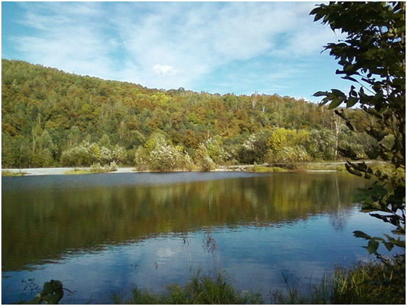
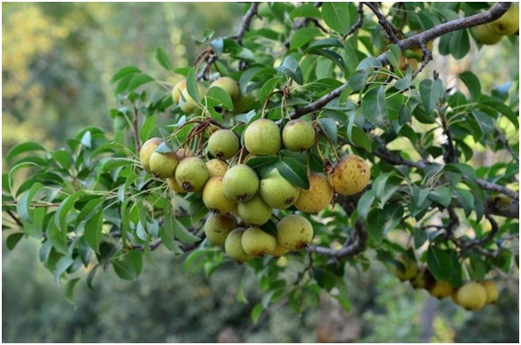

9. Государственный природный заказник «Дичун»
Площадь Заказника 48 846 га.
По своему профилю Заказник является биологическим и выполняет функции по сохранению, воспроизводству восстановлению ценных растительных формаций кедрово-широколиственных и темнохвойно-кедровых лесов, а также сохранения и поддержания общего показателя биоразнообразия.
Растительность – широколиственные, кедрово-широколиственные, темнохвойно-кедровые леса. В долинах – уремные леса, вкрапления лугово-болотных участков с разнотравно-вейниковыми травостоями, кустарниками. Сочетание и разнообразие растительных и ландшафтных группировок сформировали ценный биотический комплекс Заказника, в составе которого представлены многочисленные виды животных и растений. Особую ценность представляют нетронутые леса – кедровники.
В бассейне реки Дичун находится крупнейший в области малонарушенный массив коренных кедрово-широколиственных лесов, являющийся основной лесосеменной базой области.
С западной стороны к границе Заказника примыкает полоса регионального экологического коридора – участки путей миграции животных.
Территория Заказника отличается большим видовым разнообразием представителей животного и растительного мира. Отмечено более 70 представителей флоры и фауны. Из видов растений и животных, занесенных в Красную книгу Еврейской автономной области на территории Заказника обитает более 70, в том числе: мандаринка, филин, иглоногая сова, амурский полоз; на пролете встречаются казарка, пискулька, лебеди малый и кликун. Имеются сведения о пребывании на территории Заказника горала амурского.
Среди представителей флоры отмечены виды, занесенные в Красную книгу ЕАО: алевритоптерис серебристый, живокость Маака, истод японский, плаунок томарисковый, пирозия длинночерешковая, груша уссурийская и другие.


Груша уссурийская Pyrus ussuriensis (занесена в Красную книгу ЕАО)